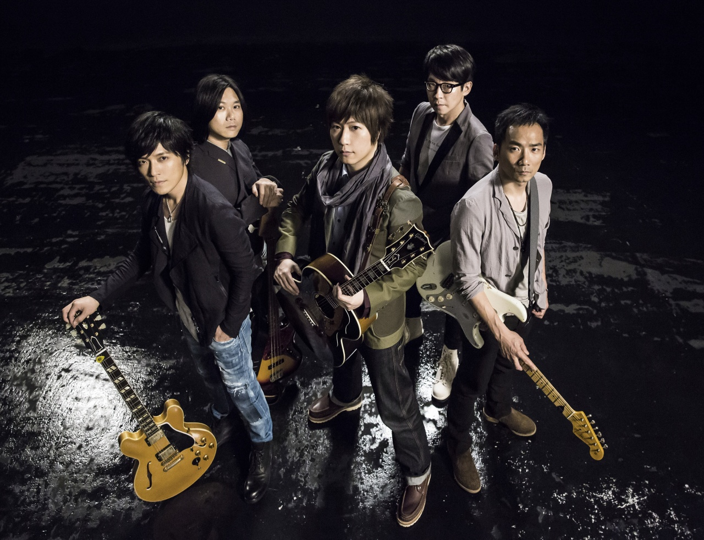
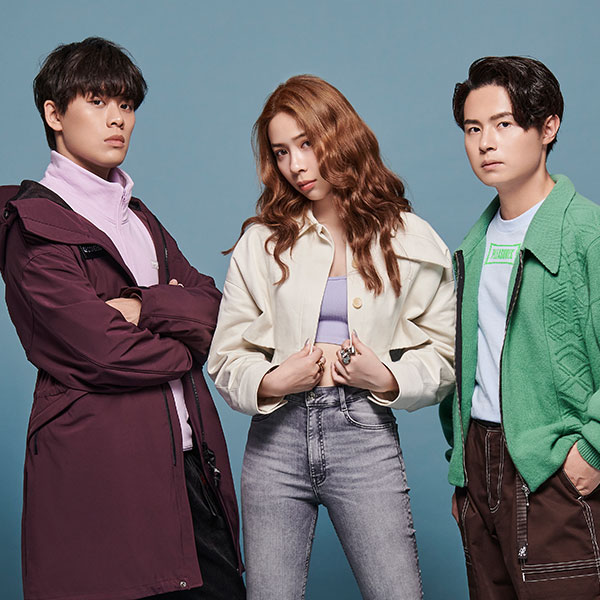
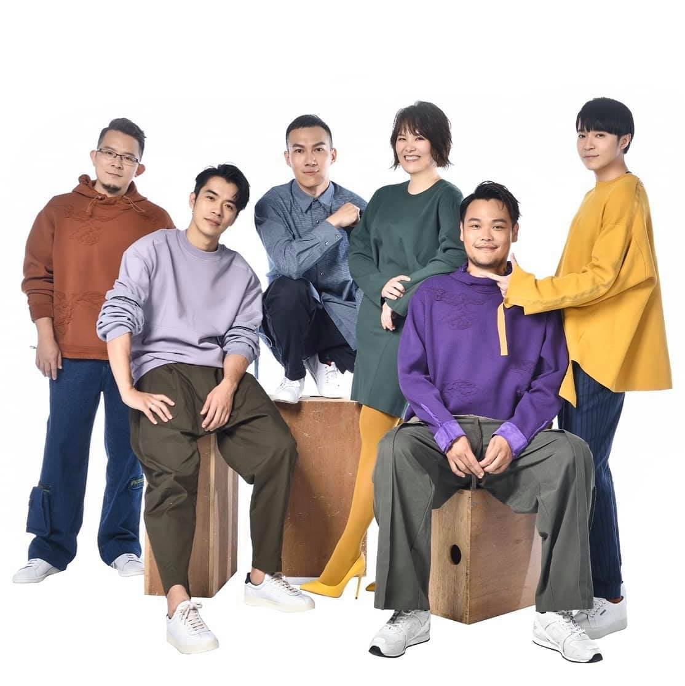
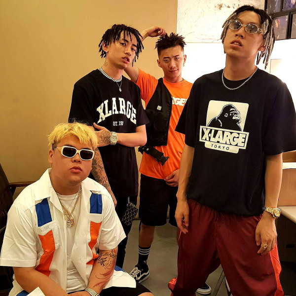
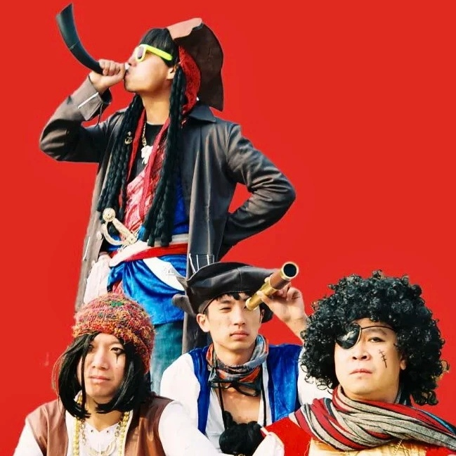

Mayday se hizo famoso con su sencillo de 1999 "志明與春嬌".
Ese mismo año, el 28 de agosto, realizaron un concierto en el estadio de fútbol de Chungshan, ganando fama en otros países como Singapur, Hong Kong y Malasia.

Acusefive ganó popularidad con su canción famosa en Internet, Miss You Day and Night.
Su estilo musical es diverso, con los vocalistas masculinos y femeninos Pan Yun An y Chuan Ching. entrelazando voces creando voces fascinantes para un efecto terapéutico infeccioso y fuerte atracción hacia el público.

¿Recuerdas el sencillo de regreso de Sodagreen, “Tomorrow Will be Fine” en 2020?
El video musical presentaba un concepto nostálgico de un chat grupal en un teléfono móvil, con conversaciones durante la pausa de la banda, lo que hizo llorar a los fanáticos acérrimos.

The album was named for the unlicensed black cab drivers of the group's native Chengdu
Higher Brothers are part of the much larger rap collective Chengdu Rap House (成都说唱会馆), also known as CDC (an abbreviation of Chengdu City), which was formed in the early 2010s. Melo, who was the earliest of the Higher Brothers to join the Rap House, performed in a cypher video in 2012 alongside original Rap House members such as Fat Shady and Sleepy Cat.[

GALA, rock band from China mainland, formed in 2004.
Ganó el premio "Single del año" en los China Rock Midi Awards celebrados a finales de 2011. En la 12ª Ceremonia de Premios Music Chart en 2012, GALA recibió 5 nominaciones por su álbum "Dream Chaser" y finalmente ganó "Mejor Banda de Rock del Año", "Mejor Álbum de Rock del Año" y "Mejor Sencillo de Rock del Año". "Tres premios, y en el mismo año ganó el premio" Mejor banda nueva del año "en los premios Chinese Golden Melody Awards. La canción" Chasing Dreams "también se adaptó como tema principal del programa de talentos de Hunan Satellite TV" Happy Boys. "
